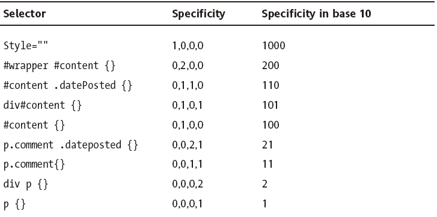

CSS & HTML
Svitlana Pylypenko
Svitlana Pylypenko
Agenda
- HTML & CSS history
- Semantic elements
- Organizing CSS code
- CSS Selectors
- CSS Preprocessors
- PostCSS
- Responsive Web Design
HTML & CSS History
- 1991 - HTML 1.0
- 1994 - Established W3C
- 1995 - HTML 2.0
- 1996 - CSS 1.0
- 1997 - HTML 3.2
- 1998 - CSS 2.0
- 1999 - HTML 4.01
- 1999 - CSS3 draft
- 2000 - XHTML 1.0
- 2004 - Established WHATWG
- 2002 - 2009 - XHTML 2.0
- 2008 - HTML 5 working draft
- 2012 - HTML 5
- 2016 - HTML 5.1
Semantic Elements in HTML5
<article>
<aside>
<details>
<figcaption>
<figure>
<footer>
<header>
<main>
<mark>
<nav>
<section>
<summary>
<time>
<section>Header, Article, Section
<article>
<header>
<h2>Apples</h2>
<p>Tasty, delicious fruit!</p>
</header>
<p>The apple is the pomaceous fruit of the apple tree.</p>
<section>
<h3>Red Delicious</h3>
<p>These bright red apples are found in many supermarkets.</p>
</section>
<section>
<h3>Granny Smith</h3>
<p>These juicy, green apples make a great filling for apple pies.</p>
</section>
</article>Footer
<body>
<footer><a href="../">Back to index...</a></footer>
<div>
<h1>Example Page</h1>
<p>This is an example</p>
</div>
<p>Some text explaining the example.</p>
<footer><a href="../">Back to index...</a></footer>
</body>Nav
<nav>
<h2>Folders</h2>
<ul>
<li> <a href="/inbox">Inbox</a> <span class="count"></span></li>
<li> <a href="/sent">Sent</a></li>
<li> <a href="/drafts">Drafts</a></li>
<li> <a href="/trash">Trash</a></li>
<li> <a href="/customers">Customers</a></li>
</ul>
</nav>Organizing CSS Code
Sooner or later...
How to?
main.scss
@import '_variables';
@import '_mixins';
@import '_fonts';
@import 'blocks/_common';
@import 'blocks/_layout';
...
variables.scss
// Fonts
$font-roboto-regular: 'roboto-regular', Tahoma, sans-serif;
$font-roboto-regularitalic: 'roboto-regularitalic', Tahoma, sans-serif;
...
// Paths
$image-path: '../../img/';
// Colors
$black: #000;
$white: #fff;
...
variables.scss
// Layout
$layout: (
header: (
background-color: #f5f6f8
),
left-sidebar: (
z-index: 100,
width: 150px,
background-color: #0a2756
),
right-sidebar: (
z-index: 80,
background-color: rgba($black, .2)
),
grid: (
columns-amount: 4
)
);
Block level variables
variables.scss
// Toasts
$toast: (
close-icon-color: #96a4b8,
background-color: #f5f6f8,
info: (
border-color: #0082ff,
color: #00519f
),
warning: (
border-color: #ffb200,
color: #b98301
),
critical: (
border-color: #f23e36,
color: #800000
)
);
toast.scss
.toast {
&-item {
border-left: 3px solid;
background: map-get($toast, background-color);
&__close {
position: absolute;
color: map-get($toast, close-icon-color);
}
&__content {
display: inline-block;
font-family: $font-roboto-light;
}
&_critical {
border-left-color: map-get(map-get($toast, critical), border-color);
color: map-get(map-get($toast, critical), color);
}
&_warning {
border-left-color: map-get(map-get($toast, warning), border-color);
color: map-get(map-get($toast, warning), color);
}
&_info {
border-left-color: map-get(map-get($toast, info), border-color);
color: map-get(map-get($toast, info), color);
}
}
}
Reusing code
DRY
Imagine everything on page is block
Everything is block
Methodology
Most known and popular of them are
-
BEM
Block Element Modifier -
SMACSS
Scalable and Modular Architecture for CSS -
OOCSS
Object Oriented CSS
BEM Example
<div class="toast">
<div class="toast-item toast-item_critical">
<span class="toast-item__close"></span>
<div class="toast-item__content"><% text-critical %></div>
</div>
<div class="toast-item toast-item_warning">
<span class="toast-item__close"></span>
<div class="toast-item__content"><% text-warning %></div>
</div>
<div class="toast-item toast-item_info">
<span class="toast-item__close"></span>
<div class="toast-item__content"><% test-info %></div>
</div>
</div>
ru.bem.info
Organizing CSS Code
- Minify amount of static files on page
- Use tags according to their purpose
- Write and keep your code clean
- Divide different source parts to different files
- Use CSS animations instead of JS
- Enable GPU acceleration for animations/transformations
- Use comments
- Use source maps
- Use class selectors
- Use CSS Preprocessor / CSS Postprocessor
- Use methodology
You should avoid
- Inline styles
- !important
- ID selectors (and tag selectors, as much as possible)
- Huge selectors or cascades
- Different units for the same tasks
- Things that aren't clear or obvious
- Transliteration and shortens in class names
CSS Selectors
Selectors
From right to left!!!
- *
- Tag
- Class
- Pseudo class
- Attribute
- ID
- Inline style
CSS Specificity

Examples
CSS Selectors
-
E:emptyElement that has no children (including text nodes) -
E:checkedUser interface element that is checked/selected -
E:not(s)Element that does not match simple selectors -
E:nth-child(n)Element, the n-th child of its parent
CSS Preprocessors
Which to choose?
Any of them
Syntax
LESS and SCSS
body {
background-color: #efefef;
font-size: 100% Helvetica, sans-serif;
}Sass
body
background-color: #efefef
font-size: 100% Helvetica, sans-serifStylus
body
background-color #efefef
font-size 100% Helvetica, sans-serifStylus supports all 3 variants
Features
- Variables
- Nesting selectors
- Imports
- Calculations
- Mixins
- Color functions
- Conditions
- Iterations
Variables
SCSS
$button-background: #bada55
.btn {
background: $button-background
}LESS
@button-background: #bada55;
.btn {
background: @button-background;
}Stylus
$button-background = #bada55
.btn
background $button-backgroundNesting selectors
Sass
.nav
margin: 0
a
color: #00f
&:hover
text-decoration: underline
&__item
padding: 10px
&:hover
color: #fff
.ie8 &
padding: 20pxLESS and SCSS
.nav {
margin: 0;
a {
color: #00f;
&:hover {
text-decoration: underline;
}
}
&__item {
padding: 10px;
&:hover {
color: #fff;
}
}
.ie8 & {
padding: 20px;
}
}
Stylus
.nav
margin 0
a
color #00f
&:hover
text-decoration underline
&__item
padding 10px
&:hover
color #fff
.ie8 &
padding 20px
CSS
.nav {
margin: 0;
}
.nav a {
color: #00f;
}
.nav a:hover {
text-decoration: underline;
}
.nav__item {
padding: 10px;
}
.nav__item:hover {
color: #fff;
}
.ie8 .nav {
padding: 20px;
}Imports
@import
Calculations
body {
margin: (14px/2);
top: 50px + 100px;
right: 100px - 50px;
left: 10px * 10;
}CSS
body {
margin: 7px;
top: 150px;
right: 50px;
left: 100px;
}Mixins
LESS
Without Arguments
.bordered {
border: 1px solid #000;
border-top-color: #444;
border-bottom-color: #444;
}
.main {
.bordered;
}
With Arguments
.transform-scale (@x, @y) {
-webkit-transform: scale(@x, @y);
transform: scale(@x, @y);
}
.main {
.transform-scale(2,3);
}
SASS
=transform-scale($x: 2, $y: 2)
-webkit-transform: scale($x, $y)
transform: scale($x, $y)
.main
+transform-scale(2, 3)
SCSS
@mixin transform-scale ($x: 2, $y: 2){
-webkit-transform: scale($x, $y);
transform: scale($x, $y);
}
.main{
@include transform-scale(2,3)
}
Stylus
transform-scale (x, y)
-webkit-transform scale(x, y)
transform scale(x, y)
.main
transform-scale(2,3)
Color functions
Sass
rgb($red, $green, $blue)
hsl($hue, $saturation, $lightness)
hue($color)
saturation($color)
lightness($color)
adjust-hue($color, $degrees)
lighten($color, $amount)
darken($color, $amount)
saturate($color, $amount)
desaturate($color, $amount)
grayscale($color)
complement($color)
invert($color)
...
LESS
rgb(@red, @green, @blue);
hsl(@hue, @saturation, @lightness);
hue(@color);
saturation(@color);
lightness(@color);
saturate(@color, @amount);
desaturate(@color, @amount);
lighten(@color, @amount);
darken(@color, @amount);
fadein(@color, @amount);
fadeout(@color, @amount);
spin(@color, @angle);
mix(@color, @angle);
grayscale(@color);
contrast(@color, @dark, @light, threshold);
...
STYLUS
rgba(color, alpha)
lighten(color, amount)
darken(color, amount)
desaturate(color, amount)
saturate(color, amount)
invert(color)
hue(color)
saturation(color);
lightness(color);
...
Conditions
Sass
@if
@else if
@else
@then
@for
@each
@while
LESS
when
if
Stylus
if
else if
else
unless
for
Iterations
SCSS
@for $i from 1 to 4 {
.border-#{$i} {
border: #{$i}px solid black;
}
}
Stylus
for i in (1..4)
.border-{i}
border (i)px solid black
CSS
.border-1 {
border: 1px solid black;
}
.border-2 {
border: 2px solid black;
}
.border-3 {
border: 3px solid black;
}
.border-4 {
border: 4px solid black;
}
Sass
$emotions: happy sad excited
@each $emotion in $emotions
.feeling-#{$emotion}
background-image: url("images/feeling-#{$emotion}")
CSS
.feeling-happy {
background-image: url("images/feeling-happy");
}
.feeling-sad {
background-image: url("images/feeling-sad");
}
.feeling-excited {
background-image: url("images/feeling-excited");
}
Responsive Web Design
Viewport
<meta name="viewport" content="width=device-width">
Fluid grid
- All dimension converting to percents
@media
- Device type
- Dimension (min/max width or height)
- Pixel ratio
- Device orientation
- ...and so on
@media
@media all and (min-width: 768px) { … }
@media (orientation: portrait) { … }
@media only screen and (min-resolution: 192dpi) { … }
@media screen and (device-width: 800px) { … }
@media (min-device-pixel-ratio: 2) { … }
<link rel="stylesheet" media="screen and (max-width: 1024px)" href="style.css" />
<style>
@media screen and (max-width: 1024px) {
.sidebar {
float: none;
}
}
</style>
Flexible Images
- max-width: 100%;
- HTML5 <picture> tag
- Icon fonts (e.g. Font Awesome)
- SVG
Frameworks
- Bootstrap
- Foundation
Mobile-first CSS
Mobile-first
// This applies from 0px to 600px
body {
background: red;
}
// This applies from 600px onwards
@media (min-width: 600px) {
body {
background: green;
}
}
Desktop-first
// This applies from 600px onwards
body {
background: green;
}
// This applies from 0px to 600px
@media (max-width: 600px) {
body {
background: red;
}
}
Thank You!
Svitlana Pylypenko,
EPAM Systems.
- @mirantel
- github.com/mirantel
- Skype: magi-mirantel